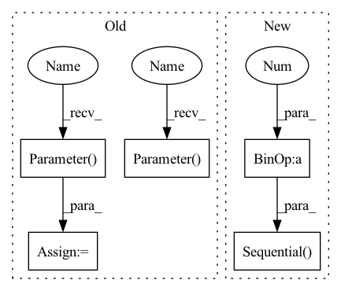

Pattern ID :303
Before Change
self.q_out = nn.Linear(dim_head, dim_head, bias = False)
self.attn_out = nn.Linear(dim_head, dim_head, bias = False)
self.out_bias = nn.Parameter( torch.zeros(1, 1, dim_head))
self.q_gate = nn.Linear(dim_head, dim_head, bias = False)
self.attn_gate = nn.Linear(dim_head, dim_head, bias = False)
self.gate_bias = nn .Parameter( torch.zeros(1, 1, dim_head))
def forward(self, x, context = None):
h = self.heads
After Change
self.dropout = nn.Dropout(dropout)
self.aoa = nn.Sequential(
nn.Linear(2 * inner_dim, 2 * dim),
nn.GLU(),
nn.Dropout(aoa_dropout)
)
def forward(self, x, context = None):
h = self.heads
In pattern: SUPERPATTERN
Frequency: 3
Non-data size: 5
Instances Fragment ID: 1171137
Project Name: lucidrains/aoa-pytorch
Commit Name: 97d99d0fce4683fdba7b8fc05ff64aa69cdcf37a
Time: 2020-11-07
Author: lucidrains@gmail.com
File Name: aoa_pytorch/aoa_pytorch.py
M Class Name: AttentionOnAttention
N Class Name: AttentionOnAttention
M Method Name: __init__(1)
N Method Name: __init__(1)
M Parent Class: nn.Module
N Parent Class: nn.Module
M File Name: aoa_pytorch/aoa_pytorch.py
N File Name: aoa_pytorch/aoa_pytorch.py
M Start Line: 29
M End Line: 35
N Start Line: 24
N End Line: 37
Before Change
self.q_out = nn.Linear(dim_head, dim_head, bias = False)
self.attn_out = nn.Linear(dim_head, dim_head, bias = False)
self.out_bias = nn.Parameter( torch.zeros(1, 1, dim_head))
self.q_gate = nn.Linear(dim_head, dim_head, bias = False)
self.attn_gate = nn.Linear(dim_head, dim_head, bias = False)
self.gate_bias = nn.Parameter( torch.zeros(1, 1, dim_head))
def forward(self, x, context = None):
h = self.heads
After Change
self.dropout = nn.Dropout(dropout)
self.aoa = nn.Sequential(
nn.Linear(2 * inner_dim, 2 * dim),
nn.GLU(),
nn.Dropout(aoa_dropout)
)
def forward(self, x, context = None):
h = self.heads
Fragment ID: 1171136
Project Name: lucidrains/aoa-pytorch
Commit Name: 97d99d0fce4683fdba7b8fc05ff64aa69cdcf37a
Time: 2020-11-07
Author: lucidrains@gmail.com
File Name: aoa_pytorch/aoa_pytorch.py
M Class Name: AttentionOnAttention
N Class Name: AttentionOnAttention
M Method Name: __init__(1)
N Method Name: __init__(1)
M Parent Class: nn.Module
N Parent Class: nn.Module
M File Name: aoa_pytorch/aoa_pytorch.py
N File Name: aoa_pytorch/aoa_pytorch.py
M Start Line: 29
M End Line: 35
N Start Line: 24
N End Line: 37
Before Change
class GroupedFeedForward(nn.Module):
def __init__(self, *, dim, groups, mult = 4):
super().__init__()
self.project_in = nn.Parameter( torch.randn(groups, dim, dim * 4))
self.nonlin = nn.GELU()
self.project_out = nn.Parameter( torch.randn(groups, dim * 4, dim))
def forward(self, levels):
x = einsum("b n l d, l d e -> b n l e", levels, self.project_in)
x = self.nonlin(x)After Change
def __init__(self, *, dim, groups, mult = 4):
super().__init__()
total_dim = dim * groups // levels * dim
self.net = nn.Sequential(
nn.Conv1d(total_dim, total_dim * 4 , 1, groups = groups),
nn.GELU(),
nn.Conv1d(total_dim * 4, total_dim, 1, groups = groups)
)
def forward(self, levels):
b, n, l, d = levels.shape
levels = rearrange(levels, "b n l d -> b (l d) n") Fragment ID: 1171139
Project Name: lucidrains/glom-pytorch
Commit Name: 570bc6667245f45ef03ad01b42cb335bda11d728
Time: 2021-03-05
Author: lucidrains@gmail.com
File Name: glom_pytorch/glom_pytorch.py
M Class Name: GroupedFeedForward
N Class Name: GroupedFeedForward
M Method Name: __init__(1)
N Method Name: __init__(1)
M Parent Class: nn.Module
N Parent Class: nn.Module
M File Name: glom_pytorch/glom_pytorch.py
N File Name: glom_pytorch/glom_pytorch.py
M Start Line: 26
M End Line: 28
N Start Line: 26
N End Line: 31
Before Change
self.scale = dim_head ** -0.5
self.dropout = nn.Dropout(dropout)
self.type_growth = nn.Parameter( torch.randn(model_dim) * 1e-5)
self.type_seasonal = nn.Parameter( torch.randn(model_dim) * 1e-5)
self.queries = nn.Parameter(torch.randn(heads, dim_head))
self.growth_and_seasonal_to_kv = nn.Sequential(After Change
Rearrange("... (kv h d) n -> kv ... h n d", kv = 2, h = heads)
)
self.seasonal_to_kv = nn.Sequential(
Rearrange("b n d -> b d n"),
nn.Conv1d(model_dim, inner_dim * 2 , seasonal_kernel_size, bias = False, padding = seasonal_kernel_size // 2),
Rearrange("... (kv h d) n -> kv ... h n d", kv = 2, h = heads)
)
self.level_to_kv = nn.Sequential(
Rearrange("b n t -> b t n"),
nn.Conv1d(time_features, inner_dim * 2, level_kernel_size, bias = False, padding = level_kernel_size // 2), Fragment ID: 1171138
Project Name: lucidrains/etsformer-pytorch
Commit Name: efd13ff72791a8a937a7f61515cb8823d6642c18
Time: 2022-03-20
Author: lucidrains@gmail.com
File Name: etsformer_pytorch/etsformer_pytorch.py
M Class Name: ClassificationWrapper
N Class Name: ClassificationWrapper
M Method Name: __init__(1)
N Method Name: __init__(1)
M Parent Class: nn.Module
N Parent Class: nn.Module
M File Name: etsformer_pytorch/etsformer_pytorch.py
N File Name: etsformer_pytorch/etsformer_pytorch.py
M Start Line: 388
M End Line: 396
N Start Line: 390
N End Line: 409